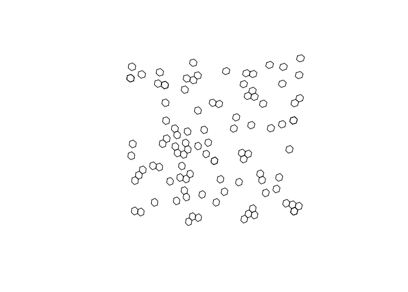
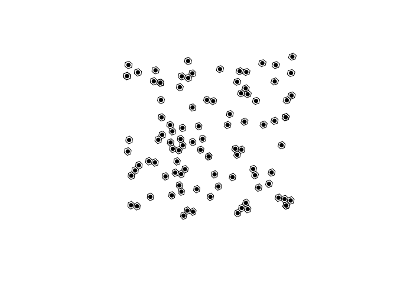

h3o is a system-dependency free package to interact with the H3 Geospatial Indexing system by Uber. h3o utilizes the Rust library h3o with is a pure rust implementation of H3 and does not link or use Uber’s H3 C library. h3o R interface is powered by extendr and should be able to compile on any machine.
You can install the development version of h3o from GitHub with:
# install.packages("remotes")
remotes::install_github("JosiahParry/h3o")To illustrate the basic usage, we can first create an sf object of random points.
pnts <- tibble::tibble(
x = runif(100, -5, 10),
y = runif(100, 40, 50)
) |>
sf::st_as_sf(
coords = c("x", "y"),
crs = 4326
)h3o utilizes vctrs to create H3 class vectors so that they can work seemlessly within a tidyverse workflow.
h3o is intended to work with the sf package for geometric operations. H3 vectors can be created from POINT geometry columns (sfc objects).
library(h3o)
pnts |>
dplyr::mutate(h3 = h3_from_points(geometry, 5))
#> Simple feature collection with 100 features and 1 field
#> Geometry type: POINT
#> Dimension: XY
#> Bounding box: xmin: -4.640664 ymin: 40.12973 xmax: 9.89838 ymax: 49.99956
#> Geodetic CRS: WGS 84
#> # A tibble: 100 × 2
#> geometry h3
#> * <POINT [°]> <H3>
#> 1 (-0.1748193 48.79705) 8518656bfffffff
#> 2 (0.8532506 46.80069) 85186893fffffff
#> 3 (6.62694 42.85004) 85396bb7fffffff
#> 4 (-0.03733749 48.06814) 8518610ffffffff
#> 5 (0.464929 45.62997) 85186b97fffffff
#> 6 (6.293697 42.92604) 8539694bfffffff
#> 7 (-0.6392504 42.96113) 85397593fffffff
#> 8 (2.020749 45.14571) 85396597fffffff
#> 9 (6.787495 41.8565) 85394d8bfffffff
#> 10 (-2.065804 49.31534) 85186293fffffff
#> # … with 90 more rowsAdditionally, H3 vectors also have an st_as_sfc() method which lets us convert vectors of H3 cell indexes into POLYGONs.
h3_cells <- pnts |>
dplyr::mutate(
h3 = h3_from_points(geometry, 4),
# replace geometry
geometry = sf::st_as_sfc(h3)
)
# plot the hexagons
plot(sf::st_geometry(h3_cells))
H3 cell centroids can be returned using h3_to_points(). If sf is avilable the results will be returned as an sfc (sf column) object. Otherwise it will return a list of sfg (sf geometries).
# fetch h3 column
h3s <- h3_cells$h3
# get there centers
h3_centers <- h3_to_points(h3s)
# plot the hexagons with the centers
plot(sf::st_geometry(h3_cells))
plot(h3_centers, pch = 16, add = TRUE, col = "black")
h3o was designed with sf in mind. H3 is a geospatial indexing system so it is important to be able to go back and from from H3 and sf objects. H3 object can be created from sfc objects and vice versa.sfc objects can also be created using the sf::sf_as_sfc() method for H3 or H3Edge vectors.
H3Edge vectors represent the boundaries of H3 cells. They can be created with h3_edges(), h3_shared_edge_pairwise(), and h3_shared_edge_sparse().
cell_edges <- h3_edges(h3s[1:3])
cell_edges
#> [[1]]
#> <H3Edge[6]>
#> [1] 11418657ffffffff 12418657ffffffff 13418657ffffffff 14418657ffffffff
#> [5] 15418657ffffffff 16418657ffffffff
#>
#> [[2]]
#> <H3Edge[6]>
#> [1] 114186c3ffffffff 124186c3ffffffff 134186c3ffffffff 144186c3ffffffff
#> [5] 154186c3ffffffff 164186c3ffffffff
#>
#> [[3]]
#> <H3Edge[6]>
#> [1] 114396bbffffffff 124396bbffffffff 134396bbffffffff 144396bbffffffff
#> [5] 154396bbffffffff 164396bbffffffffWe’ve created a list of each cell’s edges. We can flatten them using flatten_edges().
cell_edges <- flatten_edges(cell_edges)
cell_edges
#> <H3Edge[18]>
#> [1] 11418657ffffffff 12418657ffffffff 13418657ffffffff 14418657ffffffff
#> [5] 15418657ffffffff 16418657ffffffff 114186c3ffffffff 124186c3ffffffff
#> [9] 134186c3ffffffff 144186c3ffffffff 154186c3ffffffff 164186c3ffffffff
#> [13] 114396bbffffffff 124396bbffffffff 134396bbffffffff 144396bbffffffff
#> [17] 154396bbffffffff 164396bbffffffffThese can be cast to sfc objects using its st_as_sfc() method.
sf::st_as_sfc(cell_edges)
#> Geometry set for 18 features
#> Geometry type: LINESTRING
#> Dimension: XY
#> Bounding box: xmin: -0.1887568 ymin: 42.46421 xmax: 6.894879 ymax: 49.06668
#> Geodetic CRS: WGS 84
#> First 5 geometries:
#> LINESTRING (0.06718183 48.61807, 0.3797637 48.6...
#> LINESTRING (-0.1314807 49.00394, -0.1887568 48....
#> LINESTRING (-0.1887568 48.77929, 0.06718183 48....
#> LINESTRING (0.438739 48.9049, 0.1834448 49.06668)
#> LINESTRING (0.3797637 48.68094, 0.438739 48.9049)Additionally, you can get the vertexes of H3 cell indexes using h3_to_vertexes() which returns an sfc_MULTIPOINT.
h3_to_vertexes(h3s)
#> Geometry set for 100 features
#> Geometry type: MULTIPOINT
#> Dimension: XY
#> Bounding box: xmin: -5.026879 ymin: 39.94716 xmax: 10.23339 ymax: 50.28041
#> Geodetic CRS: WGS 84
#> First 5 geometries:
#> MULTIPOINT ((0.1834448 49.06668), (-0.1314807 4...
#> MULTIPOINT ((1.137485 47.13162), (0.8340071 47....
#> MULTIPOINT ((6.354821 42.84855), (6.282053 42.6...
#> MULTIPOINT ((0.009641755 48.393), (-0.3021414 4...
#> MULTIPOINT ((0.2465874 45.86362), (-0.05258159 ...Since h3o is written in Rust, it is very fast.
Creating polygons
h3_strs <- as.character(h3s)
bench::mark(
h3o = sf::st_as_sfc(h3s),
h3jsr = h3jsr::cell_to_polygon(h3_strs)
)
#> # A tibble: 2 × 6
#> expression min median `itr/sec` mem_alloc `gc/sec`
#> <bch:expr> <bch:tm> <bch:tm> <dbl> <bch:byt> <dbl>
#> 1 h3o 305.98µs 327.59µs 2997. 26.84KB 8.23
#> 2 h3jsr 7.51ms 7.81ms 124. 3.02MB 24.8Converting points to cells
bench::mark(
h3o = h3_from_points(pnts$geometry, 3),
h3jsr = h3jsr::point_to_cell(pnts$geometry, 3),
check = FALSE
)
#> # A tibble: 2 × 6
#> expression min median `itr/sec` mem_alloc `gc/sec`
#> <bch:expr> <bch:tm> <bch:tm> <dbl> <bch:byt> <dbl>
#> 1 h3o 108.49µs 124.93µs 6254. 848B 11.5
#> 2 h3jsr 2.03ms 2.17ms 424. 856KB 13.0Retrieve edges
bench::mark(
h3o = h3_edges(h3s),
h3jsr = h3jsr::get_udedges(h3_strs),
check = FALSE
)
#> # A tibble: 2 × 6
#> expression min median `itr/sec` mem_alloc `gc/sec`
#> <bch:expr> <bch:tm> <bch:tm> <dbl> <bch:byt> <dbl>
#> 1 h3o 596.6µs 641.12µs 1103. 848B 12.1
#> 2 h3jsr 1.8ms 2.04ms 456. 82.8KB 13.0Get origins and destinations from edges.
# get edges for a single location
eds <- h3_edges(h3s[1])[[1]]
# strings for h3jsr
eds_str <- as.character(eds)
bench::mark(
h3o = h3_edge_cells(eds),
h3jsr = h3jsr::get_udends(eds_str),
check = FALSE
)
#> # A tibble: 2 × 6
#> expression min median `itr/sec` mem_alloc `gc/sec`
#> <bch:expr> <bch:tm> <bch:tm> <dbl> <bch:byt> <dbl>
#> 1 h3o 20.1µs 25.4µs 33736. 12.7KB 13.5
#> 2 h3jsr 464µs 628.7µs 1461. 34.8KB 18.6